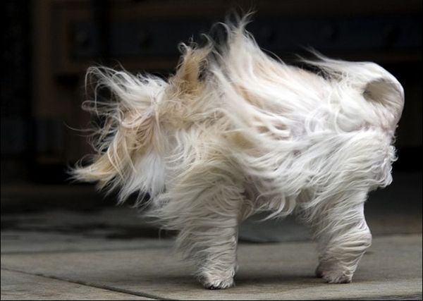

link rel="preconnect" href="https://fonts.googleapis.com">
The Maltese
is a breed of dog in the toy group. It is thought to have originated in south-central Europe from dogs of spitz type.
Despite the name, it has no verified historic or scientific connection to the island of Malta.
It traditionally has a silky, pure-white coat, hanging ears and a tail that curves over its back, and weighs up to 3.6 kilograms (8 lb).
woof
